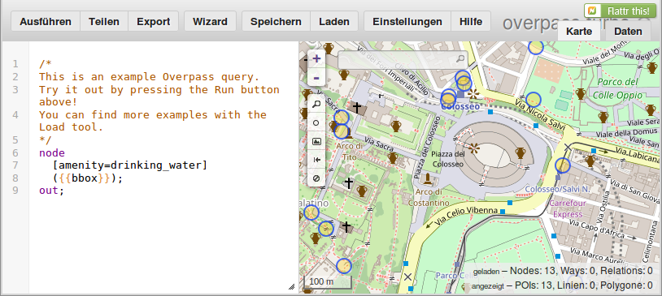

git clone https://github.com/MRQ/10k_map
Inhalt:
Testbar auf http://overpass-turbo.eu/
[timeout:120];
// ↑ Um den Server bei einem Schreibfehler nicht zu überlasten.
(
(
// way: Datentyp in der Ausgabe.
// (): Auswahl
// around: (radius/m), (lat/°), (lon/°)
// []: Filter
way(around:6000,50.785,6.106)["highway"~"motorway|motorway_link| ↴
↳ trunk|trunk_link|primary|primary_link|secondary|secondary_link"];
way(around:4000,50.785,6.106)["railway"];
way(around:4000,50.785,6.106)["landuse"];
way(around:2400,50.785,6.106)["highway"];
);
>;
// ↑ Alle Nodes zu diesen Ways nachladen.
node(around:4800,50.785,6.106)["place"];
);
out body; // alle benötigten Daten ausgebenSAX-Parser verfügbar:
class OsmParser : public xmlpp::SaxParser
{
// …
protected:
virtual void on_start_element(
const Glib::ustring& name,
const AttributeList& properties
);
virtual void on_end_element(const Glib::ustring& name);
// …
};$ time bzcat nordrhein-westfalen.osm.bz2 | ↴
↳ operf --callgraph ./build/10k_map_generator 50.7795 6.0998
operf: Profiler started
…
WARNING: Lost samples detected! See /…/oprofile_data/samples/operf.log for details.
Profiling done.
real 2m41.436s
user 6m21.772s
sys 0m7.244s
opreport --accumulated --symbols
| 13,8% | libxml2.so.2.9.1 |
| 6,6% | _gconv_get_builtin_trans |
| 1,4% | _gconv_lookup_cache |
| 1,4% | _gconv_transform_internal_ascii |
| 1,1% | _gconv_transform_utf8_internal |
| 1,1% | iconv_open |
Glib::ustring
<?xml version="1.0"?>
<svg width="100%" height="100%" viewBox="0 0 600 600" xmlns="http://www.w3.org/2000/svg" xmlns:xlink="http://www.w3.org/1999/xlink" onload="init();">
<style type="text/css">
#snet, .snet {fill: none; stroke-linecap: round; stroke-linejoin: bevel}
.mo {stroke: #e15983; stroke-width: 16}
.fill .mo {stroke: #e892a2; stroke-width: 14}
.z0 .z0 .outline .mo {stroke-width: 32}
.z0 .z0 .fill .mo {stroke-width: 24}
.pr {stroke: #b78b34; stroke-width: 15}
.fill .pr {stroke: #fcd6a4; stroke-width: 13}
.z0 .z0 .outline .pr {stroke-width: 30}
.z0 .z0 .fill .pr {stroke-width: 22}
.se {stroke: #96a03b; stroke-width: 14}
.fill .se {stroke: #f7fabf; stroke-width: 12.5}
.z0 .z0 .outline .se {stroke-width: 28}
.z0 .z0 .fill .se {stroke-width: 20}
.z0 .z0 .z0 .z0 .z0 .outline .se {display: none}
.z0 .z0 .z0 .z0 .z0 .fill .se {display: none}
.te {stroke: #cccbcb; stroke-width: 13}
.fill .te {stroke: #fff; stroke-width: 11}
.z0 .z0 .z0 .outline .te {display: none}
.z0 .z0 .z0 .fill .te {display: none}
.st {stroke: #cccbcb; stroke-width: 10}
.fill .st {stroke: #fff; stroke-width: 8}
.z0 .z0 .z0 .outline .st {display: none}
.z0 .z0 .z0 .fill .st {display: none}
.rw {stroke: #555; stroke-width: 10}
.fill .rw {stroke: #eee; stroke-width: 4; stroke-dasharray: 30 30}
.z0 .z0 .outline .rw {stroke-width: 20}
.z0 .z0 .fill .rw {stroke-width: 8}
.sn {font-family: sans; font-size: 24px}
.z0 .z0 .sn {display: none}
/*.z0, .z1 {transition: all 0.2s linear}*/
.z0 {transform: scale(0.5)}
.z1 {transform: scale(1)}
#zoom-in, #zoom-out {cursor: pointer}
</style>
<script><![CDATA[
var f = 3; // zoom factor
var ox = 0; // persistent offsets
var oy = 0;
var dx = 0; // current drag offsets
var dy = 0;
var sx = 0; // drag start positions
var sy = 0;
var p = 0;
var shifter = 0;
var streets = 0;
function init()
{
p = document.getElementById('zp');
shifter = document.getElementById('shifter').transform.baseVal.getItem(0);
streets = document.getElementById("streets");
streets.addEventListener('mousedown', grab);
streets.addEventListener('mouseup', drop);
};
function zoom_in()
{
if(p.getAttribute('class') == 'z0')
{
p.setAttribute('class', 'z1');
p = p.firstChild;
f = f * 0.5;
}
};
function zoom_out()
{
if(p.parentElement.getAttribute('class') == 'z1')
{
p = p.parentElement;
p.setAttribute('class', 'z0');
f = f * 2.0;
};
};
function grab(ev)
{
streets.addEventListener('mousemove', drag);
sx = ev.clientX;
sy = ev.clientY;
};
function drag(ev)
{
dx = ((ev.clientX - sx) * f + ox);
dy = ((ev.clientY - sy) * f + oy);
shifter.setTranslate(dx, dy);
};
function drop(ev)
{
drag(ev);
streets.removeEventListener('mousemove', drag);
ox = dx;
oy = dy;
};
]]></script>
<defs>
</defs>
<g id="streets" transform="translate(300 300)">
<path d="M -2000 -2000 h 4000 v 4000 H -2000 z" fill="#f2efe9" />
<g class="z1"><g class="z1"><g class="z1"><g class="z1"><g class="z1"><g id="zp" class="z0"><g id="shifter" transform="translate(0 0)">
<circle cx="0" cy="0" r="1300" fill="none" stroke="#cccbcb" stroke-width="2" stroke-dasharray="40 30" />
<!--<circle cx="0" cy="0" r="2100" fill="none" stroke="#96a03b" stroke-width="4" stroke-dasharray="80 60" />-->
<circle cx="0" cy="0" r="2100" fill="none" stroke="#e15983" stroke-width="8" stroke-dasharray="160 120" />
<g class="outline"><use xlink:href="#snet" /></g><g class="fill">
<g id="snet">
<path class="se" d="M 437 -181 429 -186 M 557 -334 552 -340 M 352 -90 362 -85 " />
<path class="pr" d="M 0 538 -12 552 M -407 578 l -4 6 -7 1 -6 5 -4 8 L -429 604 M -219 594 -211 615 M -1840 328 -1810 362 M -851 820 -835 750 M -1960 375 l -10 1 -12 1 -6 -1 -6 -3 L -2020 346 M -828 1760 l -11 -9 -11 -2 L -858 1750 M -820 737 l -13 -4 L -882 704 M 87 604 l 8 0 8 2 L 119 615 l -8 -15 0 -6 L 111 588 M -1030 552 -1050 599 M 2 474 l 8 23 L 10 509 M -26 573 l 19 -2 L 10 578 M 1390 276 l 11 -9 -3 -8 L 1390 253 M 1390 219 l -8 1 L 1380 223 M 1350 225 l -5 13 L 1350 244 M 1350 276 l 12 -1 L 1370 271 M 141 -1750 130 -1750 M 1350 244 l -4 8 -3 12 L 1350 269 M 1380 223 l -13 -2 L 1360 217 M 1390 253 1390 231 M 1370 271 l 7 1 L 1380 274 M -49 1170 l 7 -12 L -19 1150 M 36 491 l -15 -2 L 2 474 M 1370 257 1380 248 M 1370 239 1370 248 M 125 -1750 137 -1730 M -414 578 l -4 -2 -2 -4 -1 -5 L -422 557 M -12 552 -29 562 M 126 -1720 l 7 -1 7 -5 L 155 -1730 M -2020 346 -2040 340 " />
<path class="mo" d="M 279 -2040 244 -2050 217 -2070 M 1260 118 1270 118 M 1300 147 l -7 -19 L 1300 104 M 1230 -18 1200 10 M 445 528 155 528 l -13 -3 -14 -3 -7 -3 L 110 509 M 297 -2070 l -9 0 -7 8 -6 5 -8 3 -11 2 L 244 -2050 M 213 -2050 239 -2040 M 217 -2070 l -45 -11 -21 -2 -16 3 -32 18 -59 69 -35 16 L -74 -1960 M 239 -2040 l 9 4 8 10 4 8 L 262 -2000 M 51 -1790 l -29 -19 -27 -31 -6 -19 0 -17 3 -19 11 -18 17 -14 21 -10 21 -5 60 -1 L 139 -1950 M 91 -1760 l 1 6 7 7 4 8 2 7 0 7 -2 8 L 105 -1720 M -16 -1830 11 -1810 M 146 -1780 l -7 0 -4 4 -9 6 -6 3 -12 0 L 106 -1760 M -168 -1950 l 10 5 45 7 23 10 16 11 20 17 L -16 -1830 M 123 562 l 6 -8 8 -5 8 -3 L 158 542 M 1500 -202 l -40 18 L 1370 -113 M 1300 104 1360 -22 M 1230 -18 l -32 8 -11 -2 L 1180 -16 M 91 -1760 125 -1750 M 239 -2040 276 -2040 M 130 -1750 106 -1760 51 -1790 M 1270 118 l 12 -1 7 -3 L 1300 104 M 213 -1960 l -11 -1 -49 -9 -16 -6 -14 -9 -11 -11 -7 -15 0 -26 4 -11 17 -17 19 -7 21 0 24 5 L 213 -2050 M 1370 -113 1230 -18 M 1360 -22 1450 -132 M 11 -1810 91 -1760 M 1200 10 1190 15 " />
<path class="st" d="M -528 461 -615 523 M -588 685 -588 679 M -483 426 -528 461 M -583 379 l -27 -24 L -621 355 M -615 418 l 7 -1 24 -32 L -583 379 M -437 300 l -60 63 L -547 328 M -292 851 -215 784 -175 750 M -588 685 -557 743 M -414 621 l 2 10 L -389 661 -343 723 M -389 661 -533 777 M -1050 -13 -1040 -8 -956 37 -922 59 M -982 103 l 0 -5 -2 -4 -3 -4 L -991 87 l -5 -2 -6 0 -6 1 -5 3 -3 5 -2 5 L -1020 104 l 3 5 3 5 5 3 5 2 6 1 5 -2 L -991 115 l 6 -3 2 -4 L -982 103 M -991 87 -956 37 M -806 -202 -820 -172 -791 -186 M -1100 176 l 41 29 26 10 27 4 L -982 217 M -1170 237 l 14 -3 L -1100 176 l 41 -53 11 -10 21 -8 L -1020 104 M -982 217 l 3 -5 -5 -78 L -991 115 M -991 -375 l -29 40 L -1060 -297 M -1190 -365 l 31 2 28 9 25 14 21 16 L -1060 -297 -991 -196 l 19 21 L -947 -157 M 615 -806 615 -813 661 -866 M 82 -661 246 -562 337 -505 418 -441 M -29 -523 l -67 -66 -19 -29 -12 -30 -6 -65 6 -36 14 -35 22 -35 L 19 -939 82 -1010 M 19 -939 -135 -1060 M -67 -1140 82 -1010 227 -898 M -523 82 -547 64 M 362 -85 l 184 101 L 557 28 M -500 799 l -10 20 L -610 851 M -685 906 -604 882 M -533 1100 -604 882 M -692 890 -820 922 M -286 453 l 72 107 9 8 9 5 9 2 9 1 12 -2 10 -5 L -71 505 M 523 866 l -8 -4 L 433 764 l -71 -86 -18 -8 -18 -1 -6 1 L 205 737 M 178 906 279 851 M 362 -239 487 -385 M 552 -340 487 -385 466 -403 M 457 906 557 1040 M -717 -74 -626 -164 l 60 -73 L -557 -255 l 12 -30 4 -21 -1 -18 -10 -34 -14 -24 -18 -21 -13 -8 L -632 -426 M -777 -158 l 47 -30 L -704 -223 M -626 -164 l -29 -28 L -704 -223 M -588 -279 -557 -255 M -764 -410 l 32 19 L -661 -334 -588 -279 M -1240 96 l 24 -10 12 -2 17 2 12 6 7 10 15 41 L -1140 151 M 375 1130 l 68 -1 7 2 L 478 1170 M -956 784 l -12 -24 L -973 757 M -1050 599 -1060 610 M -523 -931 l 29 -96 21 -42 L -359 -1210 M -437 -890 -445 -898 M -523 -931 l -9 -2 -5 3 -2 6 2 6 L -533 -914 M 24 -1260 1 -1230 M -175 750 l 1 -4 L -259 649 M -215 784 -257 737 M -343 723 l -115 88 L -461 820 M -343 723 -284 667 M -610 851 -698 874 M -533 1100 l 9 4 73 -97 2 -5 L -449 991 -453 922 -461 820 M -453 922 -538 947 M -528 1130 -533 1100 M -372 851 l -2 28 L -375 882 M -289 1010 -379 1010 M -294 1100 -289 1010 -286 922 M 136 638 l -133 87 L 1 730 M -1190 213 l -39 -30 L -1240 96 l -11 -26 L -1250 61 M -1030 -400 -1000 -474 -973 -542 -931 -615 -914 -649 M 250 1210 221 1040 M 851 -710 l -179 -175 L 661 -866 M 429 -820 422 -828 M 557 -547 429 -632 M 466 -403 l 43 -54 24 -53 L 557 -547 655 -661 704 -730 M 655 -661 429 -820 M 483 -914 422 -828 M 34 1180 32 1170 M 382 1190 359 1190 M 615 1000 557 1040 483 1100 M 615 1000 673 1060 M 141 267 4 379 " />
<path class="st" id="s0" d="M -61 -2 l 161 119 4 4 L 108 127 110 136 " />
<path class="st" d="M 141 267 110 136 M -71 505 -13 457 M 523 866 542 874 557 882 M -615 523 l -85 70 -10 13 -13 26 L -737 685 M 362 -1010 l 5 -7 L 375 -1030 M 167 -1240 125 -1190 119 -1190 M 505 -906 594 -1020 l 7 -7 L 604 -1020 632 -1060 M 604 -1020 l -7 9 L 594 -1020 M 505 1120 483 1100 l -92 -87 L 362 1030 M -1070 -130 -1050 -165 -991 -196 M -1080 -229 l 2 39 6 6 10 4 L -1050 -165 M -965 757 l 63 -10 1 8 -39 18 -12 7 L -965 757 M -947 28 -956 37 M -947 28 -820 -172 M -453 573 l -6 -10 L -528 461 -583 379 M 542 874 l -6 11 L 615 1000 M 120 1190 l 32 -45 -15 -8 -27 6 -9 -43 -106 50 83 16 L 120 1190 M -343 723 -292 851 -286 874 M 562 1120 604 1090 M -743 717 -737 730 M -67 -1140 -135 -1060 l -75 110 -11 39 -1 13 -17 9 -12 -4 -15 -27 L -368 -991 M -528 -621 l 25 -27 L -478 -667 M 279 851 l 32 -19 7 1 L 433 764 l 91 -73 L 588 673 M -13 457 -9 453 M 1180 -461 1140 -491 M 246 -562 325 -692 M 322 -487 279 -437 207 -352 M 142 626 l 16 -12 3 -25 13 -2 -8 13 -1 5 2 18 -5 -1 -4 -4 L 142 626 M -698 874 -692 890 -685 906 M 1130 -519 1120 -514 l -3 3 6 9 L 1140 -491 M -965 757 -973 757 M -737 730 -698 874 M -39 1180 -38 1170 M -583 379 -547 328 -483 257 " />
<path class="st" id="s1" d="M -588 679 l -23 -69 L -615 523 -615 418 -621 355 l -1 -123 3 -19 7 -17 L -604 184 " />
<path class="st" d="M -379 973 -379 1000 -379 1010 -382 1140 M -375 882 -379 973 M 325 -692 l 71 45 L 410 -644 M -604 184 -588 165 M -604 882 -610 851 M -685 906 -667 973 M -610 851 -655 704 M 105 784 -165 898 l -41 2 L -221 898 M -973 757 -1010 757 M -604 -8 -588 37 M -547 64 -588 37 l -41 55 L -632 90 M 322 -487 337 -505 M 466 -403 457 -414 M -445 -898 -519 -922 M 1140 -491 1130 -519 M -449 991 -441 991 -385 1000 -379 1000 M -385 1000 l 0 22 -48 -1 -12 -9 2 -5 L -441 991 -385 1000 M 359 1190 250 1210 M 221 1040 178 906 M -9 453 24 426 M -704 -223 l -23 -15 L -661 -334 M 349 -385 279 -437 M 349 -385 279 -302 M 1 -1230 -67 -1140 M 205 737 105 784 M -737 685 l -5 23 0 4 L -743 717 M -286 922 -286 874 M -297 1150 -294 1100 M -221 898 -286 874 M -453 573 -449 583 M 615 898 791 939 M 557 882 615 898 M 557 882 l -2 -13 L 552 851 M 227 -898 248 -874 M -300 1210 -297 1150 M 375 -1030 l 9 -7 25 -36 L 418 -1070 M -533 777 l 4 9 7 7 L -500 799 M -557 743 l 17 29 L -533 777 M -500 799 -478 813 -461 820 -372 851 -343 858 -286 874 M -533 -914 l 8 -1 5 -4 L -519 -922 l -1 -7 L -523 -931 " />
<path class="st" id="s2" d="M 207 -352 279 -302 362 -239 429 -186 " />
<path class="te" id="s3" d="M -588 165 l 12 5 L -483 257 -437 300 -294 445 " />
<path class="te" d="M -866 -281 -858 -271 M -866 -281 -890 -305 M -1130 123 l -9 -13 L -1150 76 " />
<path class="te" id="s4" d="M -588 165 -523 82 -225 -286 -29 -523 82 -661 248 -874 " />
<path class="te" d="M -225 -286 l -60 -47 -21 -22 -89 -163 -45 -43 L -528 -621 -557 -632 M 1090 505 1100 533 M -1130 142 -1130 123 M 2 474 -13 457 M -123 325 -129 316 M -294 445 -286 453 M 352 -1010 362 -1010 M 289 -922 l -8 3 -29 36 L 248 -874 M -858 -271 -820 -227 M 1100 533 1100 538 M -13 457 -119 328 M -610 161 l 5 13 L -604 184 M -698 64 l 1 26 L -692 106 l 8 9 L -632 149 M -119 328 -123 325 M 362 1030 l -4 -20 L 343 973 M 302 -939 316 -956 M -890 -305 -991 -375 -1030 -400 -1120 -437 M -820 -227 -806 -202 -791 -186 -777 -158 -717 -74 l 8 14 4 18 L -698 64 M 316 -956 l 31 -46 L 352 -1010 M 362 1030 M 375 1130 362 1030 M 382 1190 375 1130 M -610 161 -588 165 M -632 149 -610 161 M 248 -874 l 9 -6 29 -36 L 289 -922 302 -939 M -1150 76 l -7 -8 -8 -46 9 -67 0 -22 -34 -97 L -1200 -289 M -557 -632 -599 -655 -604 -661 " />
<path class="se" d="M -1300 791 -1270 828 -1250 851 M 343 973 279 851 M 34 1120 l -10 5 L -8 1130 M -1450 1350 l 5 -2 -17 22 -13 13 L -1490 1380 M -1730 655 -1700 655 M 1000 -874 1050 -898 1140 -914 1180 -922 M -813 -1420 l 9 1 10 4 L -784 -1410 M -1300 1390 -1310 1370 M 851 -710 965 -851 M 851 -710 806 -655 M -890 757 l -44 16 L -956 784 M 523 866 538 858 M 1190 441 1350 276 M -813 -1420 l -2 -15 -1 -7 2 -7 L -806 -1460 M -1540 723 -1470 737 M -1240 858 -1240 866 M 1330 -1050 l 38 -2 L 1380 -1060 M 1270 -1260 1300 -1290 M 1330 -1050 l 0 -5 -29 -23 -11 -14 L 1250 -1170 M -1190 947 -1150 922 M 34 1120 221 1040 M -4 1140 34 1120 M -828 1840 -828 1810 M -112 -1380 -158 -1410 M 1370 248 1350 269 1350 276 M -441 578 -433 567 M 1350 276 1370 257 M 806 -644 813 -649 M -19 1150 -4 1140 M -1780 692 l 10 -3 38 -23 L -1730 655 M -1890 770 l 8 -8 51 -34 L -1830 717 M -1070 843 -1000 806 M -1150 922 M -1430 1330 -1390 1360 M -750 -1410 -599 -1410 M -1430 1330 -1410 1300 M -294 445 -308 466 " />
<path class="se" id="s5" d="M -286 453 -123 325 110 136 l 225 -188 L 362 -85 437 -181 557 -334 806 -644 " />
<path class="se" d="M 806 -655 799 -649 M 813 -649 l 28 -39 L 851 -710 M -241 -1410 l 94 19 13 5 L -119 -1380 M 538 858 552 851 679 764 M -343 -1410 -262 -1410 M -1890 770 -1930 799 M 1320 -1020 l 16 -10 1 -6 0 -6 L 1330 -1050 M -813 -1680 -820 -1700 -1000 -1840 M -100 -1380 -112 -1380 M 965 -851 982 -866 M 1370 -1360 1500 -1470 M -956 784 -1000 806 M -1550 723 -1540 723 M -1730 655 l -6 5 L -1750 661 -1760 679 -1780 685 -1780 692 M -1240 866 -1230 874 -1230 882 M -119 -1380 -108 -1370 M -1700 655 -1550 723 M -1110 1500 -1090 1510 M -1130 1490 -1110 1500 M -262 -1410 -241 -1410 M -392 -1410 -359 -1410 -343 -1410 M 991 562 1090 505 M 931 594 965 573 M -828 1840 M -835 1910 -828 1880 -828 1840 M -1330 1390 l 11 -7 4 -6 L -1310 1370 M -8 1130 -58 1150 M 274 1010 343 973 M 1300 -1290 1330 -1320 M 205 737 181 698 136 638 M 799 -649 552 -340 429 -186 352 -90 108 127 -129 316 -294 445 M 343 973 457 906 M -1550 1410 -1530 1410 M -1360 1330 -1370 1320 M -1410 750 l 57 8 15 5 12 5 L -1300 791 M 1250 -1170 l -10 -25 -1 -7 0 -6 2 -6 2 -5 L 1270 -1260 M 1210 -939 1250 -965 M -922 1610 -882 1640 M -158 -1410 -178 -1410 M -1240 1430 -1210 1450 -1130 1490 M -1300 1390 -1240 1430 M -1080 858 -1070 843 M -1110 882 -1080 858 M -178 -1410 -241 -1410 M 136 638 119 615 M 679 764 710 737 M -1000 806 -973 799 -947 791 -890 770 M -325 478 l -14 3 -68 54 L -407 547 M -433 567 -453 573 M -308 466 -286 453 M -325 478 -308 466 M -407 547 l 13 -7 64 -51 L -325 478 M -433 567 -422 557 -407 547 M 279 851 205 737 M 221 1040 274 1010 M -449 583 -441 578 M -1530 1410 l 13 -1 L -1500 1410 M -1090 1510 -1020 1550 -973 1580 -922 1610 M -882 1640 -813 1680 M 965 573 991 562 M 914 599 931 594 M 1130 478 1190 441 M 1090 505 1130 478 M 457 906 523 866 M 710 737 914 599 M 982 -866 1000 -874 M -784 -1410 -750 -1410 M -791 -1500 l 12 -30 5 -27 1 -27 -7 -41 -5 -19 L -813 -1680 M -806 -1460 -791 -1500 M -599 -1410 -552 -1410 -392 -1410 M -1470 737 -1410 750 M -1530 1410 -1540 1420 M -1450 1350 -1430 1330 M -1530 1430 l 1 -6 L -1530 1410 M -1500 1410 l 18 -14 11 -7 10 -9 22 -28 L -1450 1350 M -1490 1380 -1530 1410 M -1250 851 -1240 858 M -1220 898 l 28 42 L -1190 947 M -1150 922 -1110 882 M -1230 882 -1220 898 M -1200 914 l -4 -6 L -1220 898 M -1190 947 l 3 -11 L -1200 914 M -1330 1390 -1300 1390 M -1370 1320 -1410 1300 M -1390 1360 l 43 26 11 4 L -1330 1390 M -1310 1370 l -8 -12 L -1360 1330 M 1380 -1060 l 51 -27 11 -2 9 -1 62 15 64 2 L 1830 -1010 M 1180 -922 1210 -939 M 1250 -965 1270 -973 1290 -982 l 26 -24 L 1320 -1020 M 1330 -1320 1370 -1360 M -1830 717 -1780 692 M -1830 717 l -56 38 L -1890 770 " />
<path class="pr" d="M -219 594 -389 583 M -866 764 -866 750 M -1260 355 l -21 -8 L -1350 340 " />
<path class="pr" id="s6" d="M 799 -644 806 -644 l 35 46 L 922 -461 " />
<path class="pr" d="M -441 578 -453 573 M 279 -2040 276 -2040 M -906 1750 l 14 10 50 8 L -828 1760 M -851 1860 l -129 -62 -7 -5 L -991 1780 M -211 615 l 22 -12 L -26 573 M 704 1600 l -4 -16 L 692 1580 M 806 -655 M 276 -2040 262 -2000 M 1810 604 l -26 -33 -27 -24 -239 -143 L 1430 316 M 1860 667 1810 604 M 1840 673 l 52 48 36 25 L 1950 757 M 1810 610 1840 673 M -2000 407 -2000 400 M -750 1140 -757 1220 M -828 1810 l -5 0 L -835 1840 M -828 1810 -828 1760 M 922 -461 947 -422 982 -334 M 956 -426 931 -466 882 -552 M 1960 750 l -29 -11 -34 -22 -13 -12 L 1860 667 M 410 1390 l 17 24 L 491 1460 M -29 562 -219 594 M 704 1600 764 1630 M 410 1390 362 1360 M -131 1150 -167 1150 M -820 1700 l -15 26 L -843 1730 M -858 1750 l -4 -2 -10 3 -26 -1 L -906 1750 M -828 1760 l 11 -9 10 -54 L -813 1680 l -6 9 L -820 1700 -828 1750 M -851 1860 M 1370 257 l 5 8 L 1380 274 M 289 -2040 279 -2040 M 276 -2040 289 -2040 M -2000 407 M 777 1640 813 1670 M -1260 355 l 8 -6 L -1250 346 M -1260 355 -1290 385 -1140 519 -1070 573 -1050 599 l 143 125 L -890 757 M -890 770 -874 764 M -866 764 -835 750 M -890 757 -890 770 M 1370 239 1360 217 1300 147 M 1380 274 l 168 164 205 115 26 23 L 1810 610 M -19 1150 l -19 3 L -58 1150 M -757 1220 -764 1290 M -2000 400 -2000 407 M 496 1450 l -66 -46 L 410 1390 M -882 757 -890 757 M 110 509 l -12 -12 -17 -9 -15 -2 -17 1 L 36 491 " />
<path class="pr" id="s7" d="M 10 509 l -8 18 L 0 538 l 5 29 L 10 578 l 8 15 20 11 11 4 12 1 12 -1 L 87 604 l 15 -8 L 111 588 l 8 -12 L 123 562 l -3 -28 L 110 509 " />
<path class="pr" d="M -890 692 -898 679 M -851 820 -866 764 M -679 -552 -737 -466 M -1130 123 -1140 151 M -866 -281 -947 -157 M -770 1330 -777 1410 M -991 1780 -991 1750 M -2000 407 l 33 -16 12 -5 L -1910 382 M -898 679 -906 667 -1030 552 -1090 496 M 538 1490 583 1510 M 538 1490 l -10 -21 L 496 1450 M -743 717 -791 730 M -866 750 -882 757 M -119 -1380 -146 -1330 M 982 -334 1010 -271 M 36 491 l -15 9 L 10 509 M 692 1580 673 1570 l -10 -12 L 655 1550 M 661 1570 679 1580 l 14 10 L 704 1600 M -777 1060 -764 1060 M -820 922 -851 820 M -58 1150 -93 1150 M -866 750 -882 704 -890 692 M 74 -1640 82 -1650 126 -1720 M 72 -1650 65 -1650 -2 -1540 -42 -1490 M 806 -655 615 -813 505 -906 426 -965 M 813 -649 806 -655 M 362 -1010 125 -1190 94 -1220 " />
<path class="pr" id="s8" d="M -108 -1370 l 29 14 L 28 -1260 119 -1190 352 -1010 483 -914 615 -806 704 -730 799 -649 799 -644 " />
<path class="pr" d="M -1910 382 l 61 -17 20 -2 L -1810 362 M 764 1630 777 1640 M 882 1720 965 1780 M 34 -1270 -29 -1330 M -791 1510 M -49 1170 -38 1170 16 1170 M 882 -552 813 -649 M -100 -1380 -90 -1390 -59 -1450 M -1700 308 -1790 319 M -1840 328 l -63 20 L -1930 359 M 215 -1880 237 -1930 M 262 -2000 193 -1860 146 -1780 M 1230 67 1250 101 M 1260 118 1270 130 M 1260 96 1230 63 1200 10 M 1180 -16 1170 -35 M -1140 1750 -1110 1750 M -874 764 -866 764 M 1190 15 1200 38 M 1300 147 1270 118 M 141 -1750 215 -1880 M 105 -1720 80 -1670 M 289 -2040 294 -2040 M -1960 375 -2000 400 M -2040 340 -2070 297 M -890 770 -828 947 M 16 1170 32 1170 M -396 -973 -445 -898 M -604 -661 -644 -610 M -445 -898 -604 -661 M -108 -1370 -100 -1380 M -112 -1380 -119 -1380 M 125 -1750 105 -1720 M 130 -1750 125 -1750 M 259 1300 237 1270 M 615 1530 626 1540 655 1550 M -835 1840 -851 1860 M -991 1750 -931 1750 M 55 1170 -19 1150 M 126 1200 l -51 -25 L 55 1170 M -2000 400 -2040 340 M -1110 1750 -991 1750 M 991 -346 956 -426 M -407 578 -414 578 M -389 583 -407 578 M -414 578 l -21 0 L -441 578 M -2050 325 l -2 9 L -2040 349 M -828 947 -820 965 M -764 1060 l 0 -14 L -791 1000 M 1270 118 1260 96 M -449 583 -429 604 -414 621 l 40 34 32 14 21 4 23 -1 L -284 667 M -791 1510 -799 1610 -813 1680 M -1790 319 -1840 328 M -1930 359 -1960 375 M -2040 349 -2000 407 M -1810 362 l 28 1 75 11 L -1580 368 -1510 368 -1410 368 M -1190 213 -1220 262 M -1210 400 -1260 355 M -1090 496 -1210 400 M -1410 368 -1320 375 M 1200 38 1230 67 M 1270 130 1300 170 M 1430 316 1390 276 M 1300 170 1350 225 1370 248 1370 257 M 1390 276 l -4 -17 L 1380 248 1370 239 M 1170 -35 l -164 -259 L 991 -346 M 94 -1220 34 -1270 M 426 -965 362 -1010 M -29 -1330 l -60 -46 L -100 -1380 M -799 -379 -820 -349 M -244 -1200 -396 -973 M -820 -349 -866 -281 M -644 -610 -679 -552 M -221 -1230 -244 -1200 M -184 -1270 -221 -1230 M -1220 262 l -44 80 L -1260 355 M -146 -1330 -170 -1300 M -528 1130 -573 1130 M -382 1140 -422 1140 M -615 1130 -626 1140 M -167 1150 -209 1150 -297 1150 M -573 1130 -615 1130 M -297 1150 l -15 -3 L -382 1140 M -583 1150 l 59 2 L -514 1140 M -764 1290 -770 1330 M -76 -1430 l -24 29 L -112 -1380 M -777 1410 -791 1510 M 297 -2070 279 -2040 M 237 -1930 289 -2040 M 813 1670 828 1670 882 1720 M -2050 433 -2000 407 M -858 1880 -851 1860 M 965 1780 1010 1790 M 655 1550 l 1 15 L 661 1570 M -1320 375 l 19 3 L -1290 385 M -1350 340 l -233 -4 L -1650 319 -1700 308 M -764 1060 -757 1080 -750 1140 M -93 1150 -131 1150 M -750 1140 -679 1140 M 583 1510 615 1530 M 491 1460 l 31 18 L 538 1490 M 334 1350 281 1310 M 32 1170 55 1170 M -58 1150 -49 1170 M -496 1140 l 12 13 L -461 1150 M -382 1150 l 70 7 L -297 1150 M -514 1140 -496 1140 M -626 1140 l 10 9 L -615 1140 M -679 1140 -626 1140 M -422 1140 l -61 2 L -496 1140 M -461 1150 -382 1150 M -615 1140 -604 1140 -583 1150 M -820 965 -813 1000 M -791 1000 -820 922 M -514 1140 -528 1130 M 237 1270 126 1200 M 281 1310 259 1300 M -813 1000 -777 1060 M -717 717 -704 717 M -717 717 l -6 -2 L -743 717 M -799 743 -737 730 l 17 -6 L -717 717 M -453 573 l -42 33 -85 66 L -588 679 l -109 30 L -704 717 l 10 -1 L -655 704 -588 685 l 131 -94 L -449 583 M -284 667 -259 649 -211 615 M 1250 101 1260 118 M -32 -1490 8 -1540 18 -1550 43 -1600 74 -1640 M -42 -1490 -55 -1470 -76 -1430 M 362 1360 334 1350 M 1200 10 1180 -16 M -931 1750 -906 1750 M -820 737 -866 750 M -791 730 -820 737 M -947 1880 -890 1890 -882 1890 M -1140 151 -1190 213 " />
<path class="pr" id="s9" d="M -1170 237 -1130 142 -1040 -8 -858 -271 -764 -410 -599 -655 -437 -890 -368 -991 -108 -1370 " />
<path class="pr" d="M -843 1730 -858 1750 M -828 1750 -828 1760 M -882 1890 l 16 -1 L -858 1880 M -835 750 -799 743 M -170 -1300 -184 -1270 M -59 -1450 -32 -1490 M -1050 -13 -1130 123 M -1000 -81 -1050 -13 M -947 -157 -1000 -81 M -737 -466 -799 -379 M 80 -1670 72 -1650 M 126 -1720 137 -1730 141 -1750 M 146 -1780 130 -1750 M -1250 346 -1170 237 M 1010 -271 1190 15 " />
<path class="mo" id="s10" d="M 158 542 l 396 -12 175 -44 195 -101 L 1230 94 " />
<path class="mo" d="M 1220 84 l -253 257 -193 115 -223 65 L 445 528 M 211 -1950 269 -1950 319 -1930 M 274 -1950 217 -1960 213 -1960 M 365 -1930 407 -1930 843 -1860 M 407 -1950 365 -1950 274 -1950 M 1230 94 1260 66 1450 -132 M 1250 53 1220 84 M 1510 -225 1500 -202 1250 53 M 1510 -198 1530 -219 1580 -292 M 1600 -308 1640 -340 1720 -433 M 1610 -337 1580 -305 1510 -225 M 1720 -433 1750 -457 1810 -538 M 1730 -461 1720 -441 1640 -362 M 1810 -538 1950 -661 M 1930 -667 1810 -547 1750 -487 M 843 -1860 898 -1840 M 898 -1860 843 -1880 453 -1930 M -487 -1950 -730 -1930 -487 -1950 -375 -1950 M 1640 -362 1610 -337 M 1580 -292 1600 -308 M 1750 -487 1730 -461 M -74 -1960 -250 -1960 -487 -1950 M -168 -1950 139 -1950 M -375 -1950 -168 -1950 M 213 -1960 -74 -1960 M 453 -1930 407 -1950 M 319 -1930 365 -1930 M 898 -1840 947 -1840 M 139 -1950 211 -1950 M 1450 -132 1510 -198 " />
<path class="rw" d="M -866 1880 l -91 -42 -50 -4 L -1010 1830 M 667 1580 692 1550 M 466 1750 478 1750 M -604 1980 -632 1960 M 1380 922 1410 898 M 717 1540 l 42 -32 L 1380 922 M -973 1860 -898 1860 -866 1880 -835 1880 -799 1890 M 466 1750 441 1780 M 685 1550 661 1570 M 965 1300 685 1550 M -1010 1840 l 52 1 L -898 1860 M -982 1860 -898 1860 M 478 1750 667 1580 M 661 1570 655 1580 M 441 1780 368 1840 l -158 158 L 155 2040 M 426 1780 l -221 211 L 154 2020 M 470 1730 426 1780 M -528 2000 -552 2000 M -799 1890 -835 1880 M -599 1960 -698 1930 M -644 1960 -799 1890 M -698 1930 -799 1890 M -898 1860 -866 1880 M 1580 764 1410 898 1380 914 M 2020 523 1580 764 M 1410 898 2020 528 M -835 1880 -866 1880 M 139 2040 l -129 49 -41 10 m -346 -36 L -483 2020 M 155 2040 141 2040 M 154 2020 139 2040 M 141 2040 l -131 59 m -422 -42 L -491 2020 M -552 2000 -599 1960 M -483 2020 -528 2000 M -491 2020 -533 2000 M 655 1580 470 1730 M 692 1550 717 1540 M 1380 914 965 1300 M -533 2000 -604 1980 M -632 1960 -644 1960 " />
</g>
</g>
<g id="names">
<text class="sn" dy="5"><textPath startOffset="30" xlink:href="#s0">Krantzstraße</textPath></text>
<text class="sn" dy="5"><textPath startOffset="30" xlink:href="#s1">Passstraße</textPath></text>
<text class="sn" dy="5"><textPath startOffset="30" xlink:href="#s4">Grüner Weg</textPath></text>
<text class="sn" dy="5"><textPath startOffset="530" xlink:href="#s4">Grüner Weg</textPath></text>
<text class="sn" dy="5"><textPath startOffset="30" xlink:href="#s5">Jülicher Straße</textPath></text>
<text class="sn" dy="5"><textPath startOffset="530" xlink:href="#s5">Jülicher Straße</textPath></text>
<text class="sn" dy="5"><textPath startOffset="1030" xlink:href="#s5">Jülicher Straße</textPath></text>
<text class="sn" dy="5"><textPath startOffset="30" xlink:href="#s7">Europaplatz</textPath></text>
<text class="sn" dy="5"><textPath startOffset="30" xlink:href="#s8">Prager Ring</textPath></text>
<text class="sn" dy="5"><textPath startOffset="530" xlink:href="#s8">Prager Ring</textPath></text>
<text class="sn" dy="5"><textPath startOffset="30" xlink:href="#s9">Krefelder Straße</textPath></text>
<text class="sn" dy="5"><textPath startOffset="530" xlink:href="#s9">Krefelder Straße</textPath></text>
<text class="sn" dy="5"><textPath startOffset="1030" xlink:href="#s9">Krefelder Straße</textPath></text>
<text class="sn" dy="5"><textPath startOffset="30" xlink:href="#s10">A 544</textPath></text>
<text class="sn" dy="5"><textPath startOffset="530" xlink:href="#s10">A 544</textPath></text>
<text class="sn" dy="5"><textPath startOffset="1030" xlink:href="#s10">A 544</textPath></text>
<text class="sn" dy="5"><textPath startOffset="1530" xlink:href="#s10">A 544</textPath></text>
<text class="sn" dy="5"><textPath startOffset="2030" xlink:href="#s10">A 544</textPath></text>
</g>
<circle cx="0" cy="0" r="10" fill="#005" />
</g></g></g></g></g></g></g>
</g>
<g id="zoom-in" onclick="zoom_in();">
<rect x="5" y="5" width="30" height="30" stroke="#222" stroke-width="2" fill="#ffe" />
<path d="M 9 20 h 22 m -11 -11 v 22" stroke="#000" stroke-width="2" fill="none" />
</g>
<g id="zoom-out" onclick="zoom_out();">
<rect x="5" y="40" width="30" height="30" stroke="#222" stroke-width="2" fill="#ffe" />
<path d="M 9 55 h 22" stroke="#000" stroke-width="2" fill="none" />
</g>
<text x="0" y="598" font-family="sans" font-size="8" fill="black" >© OpenStreetMap contributors</text>
</svg>
Quantisierung:
| Stufen | Größe / B |
|---|---|
| max | 8993 |
| 256 | 8675 |
| 128 | 8388 |
| 96 | 8230 |
| 64 | 7980 |
SVG-path-Kodierung
<script> …
function grab(ev)
{
streets.addEventListener('mousemove', drag);
sx = ev.clientX;
sy = ev.clientY;
};
function drag(ev)
{
dx = ((ev.clientX - sx) * f + ox);
dy = ((ev.clientY - sy) * f + oy);
shifter.setTranslate(dx, dy);
};
function drop(ev)
{
drag(ev);
streets.removeEventListener('mousemove', drag);
ox = dx;
oy = dy;
};
</script> …
<style>
.z0 {transform: scale(0.5)}
.z1 {transform: scale(1)}
</style> …
<g class="z1"><g class="z1"><g class="z1"><g class="z1"><g class="z1">↴
↳<g id="zp" class="z0"><g id="shifter" transform="translate(0 0)">
…{kind=link}
{kind=link}
{kind=link}
{kind=link}
{kind=link}
{kind=link}
{kind=link}
{kind=link}
{kind=link}